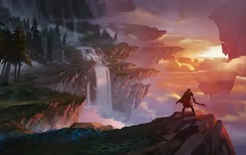

Historia/jogo
Em um belo dia todos da vila Senci cit, onde todos estavam comemorando um festival de primavera em paz guando todos escutam um barulho de sino ecoando por todo o reino.
Quando o sino e esoado todos presente sentem apertos no peito uns setrasformando em monstros outros perdendo sua humanidade e virando algo terrivel de se ver,
mais metade dos trasformados tem comtrole do seu corpo e outros não(viraram literalmente uma fera).
Todos sentem que isso vem da biblioteca onde todos saem corendo para ver oqeu estava acontecendo e persebem algo terrivel,
e arrepiante uma criança presa em uma pilastra com um circulo magico em volta a prendendo com correntes,
mais de pois de tentarem tirala ela os espuçou pois estavam a mechucando.E todos foram jogados a força para fora.
"Desenvouvimento de um jogo tanto o disigner guanto nos metodos" de RPG,Ação,Estratégia e etc.
As classes de jogo e dividida principalmente por estilo (como RPG, Ação, Estratégia) ou por função dentro de um grupo (Tanque, DPS, Healer e outos).
Outras classes comuns incluem combatentes (corpo a corpo e de longo alcance), conjuradores (mágicos) e especialistas em suporte e habilidades diversas com atiradores magicos o pisional.

Estilo do jogo
Ação: focado em combate e reflexos rápidos.
Aventura: Foca em exploração, resolução de quebra-cabeças, narrativa e ihtorias (por dentro das mições).
RPG (Role-Playing Game): Permitindo que os jogadores assumam o papel de um personagem, muitas vezes com subclasses como combatentes, magos,arqueiros,ninjas,ladrões, corpo a corpo.
Estratégia: podendo ter livre esploração, tendo gerenciamento de recursos e estrategias de giudas (con niveis diferentes).
Esporte: Simulam esportes do mundo real ou inventados e com mecanica de alimento.
Corrida: Jogos focados na competição de velocidade em veículos ou agilidades como spid e outros.
Simulação: Tentam simular atividades realistas com movimentação ou animação, como pilotagem de animais vuadores (sendo seus pets temdo clases de terestre e voador) e construção de cidades/vilas (Pelo mundo sem do livre).
inclução adisional:Tribos que podem ser criadas por amigos, conhesidos e aleatorio (tendo um limite emtre eles)
, sub classes e evolução das Raças.
Classes:
Gereiro,glerigo,mago,druida,bardo,monge,ladino,espadachi,nija,arquero,ladrão,necromencer,Bruxo, Xamã, Feiticeiro,druida e barbaro.
Raça:
Humano,Meio humano,Semi Deus,Elfo,Anois,Globins,Minotauro,Demonio,Onis,Largators,Meio-elfos,Elfos nogro,Meio-orcs,Orcs,Draconicos,Halflings,Tieflings,Kenku,Genasi e Tabaxi.
Sub Classes:
Em desenvouvimento
Evolução de Raças:
- Humano(Podendo subir para Semi deus ou Deus tendo uma probabidade baixa de 3% dependendo do HP pode acabar ao mentando.)
- Meio Humano(Poder não reconecido , temdo raças bestiais comtando com formas lineares e posuindo as abilidades das duas raças eas fraquesas das raças.)
- Semi Deus(Tendo um aomanto de HP dependendo de que tipode deus se tornar, tendo bufis, avansos, opições de desenvouvimento e e ten prazo de 42h)
- Elfo(Tem mais avansocon a magia e com 30% de magia melhoradas)
- Anois(Boas maos para forja, bebidas e aquipamentos magico sendo ele anti magia)
- Globins(O timos ladrois e sorateiros mais por um preve momento de 50minitos)
- Minotauro(Forsa abirsurda, tem um ataqu ede furia com 20% de despertar)
- Demonios(Fogo e vuneravel mais fogo sagrado de nivel maior atinge, Tendo um debof de vuneravel a tudo por 5minutos e tendo um disperta com porsentagen de 30%)
- Onis(Podendo ser ogros ou trolls demoniocos tendo uma força maior que or dos Minotauros)
- Largatos(Veneno nivel mais auto que o normal, podendo se clamufar por 30minutos com um curto tempo de 10minutos sem poder usar novamente)
- Meio-elfo(Tem avanso de magia avansado so que com 10% de magias melhoradas)
- Elfo-negro(São rapidos fortes e não podem sair na luz solar e e tem fraqueza a gualquer ataque magico de HP alto)
- Meio-Orcs(A força pode ser almentada em 3% Tem vantagen a corpo a corpo)
- Orcs(Força mais aprimorada, com uma baicha na velocidade)
- Draconicos(Melhorias em magias de fogo de gualquer tipo de espadas draconicas, perden agp e tem fraqueza a gelo e água )
- Halflings( Aomenta a velocidade e a sorte mais a sorte dura por um periodo de 40minuto podendo ser aomentado por frutas e gomas de sorte)
- Teflings(A força dos aranhois aomantao de acordo com o nivel de HP e tem probabilidade de 20% de ganhar uma maobição)
- Kenku(Tem mais vantagen de copiar as falas dos personagem e animais)
- Genasi(De pedendo de seu elemanto ele ganha um debuf de 30% nas suas magias depandendo de como a usam)
- Tabaxi(10 metros e velocidade de escalada igual à de caminhada e tem um vunerabilidade com água)